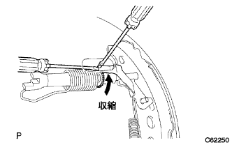
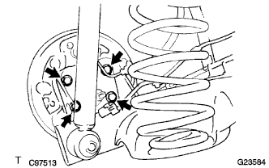
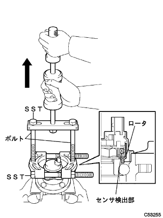

Skid control sensor removal |
| 1. Remove the rear tire |
| 2. Skid control sensor wire cut off |
| 3. Remove the rear brake drum |
|  |
Unlock the parking brake and remove the rear brake drum.
| 4. Rear Axle Hub & Bearing Assy LH removed |
|  |
Remove the four bolts and remove the hub and bearing asser.
| 5. Remove the skid control sensor |
Attach 4 hub nuts to the rear axle hub bolt, and fix the rear axle hub to the vice via an aluminum plate.
Use a ping-punch (3mm) and a hammer to remove two pins from the SST (09520-00031) and remove the Attachment (09521-00010).
|  |
Use SST and two bolts (90101-12007) to remove the skid control sensor from the rear axle hub.